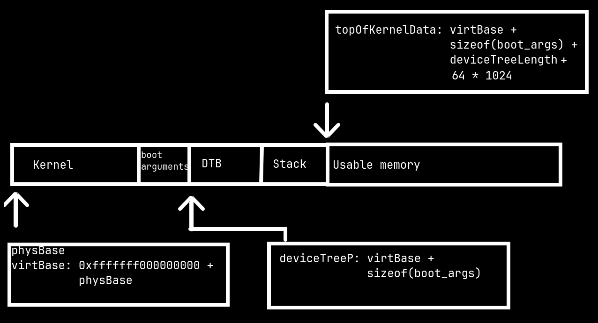

The XNU kernel runs on most Apple devices. It is the kernel used in macOS and iOS.
This blog post is a write up of my attempts at trying to run it on a Raspberry Pi 3 B+.
The XNU kernel has a build target for the BCM2837 since 2016
There have been attempts before at building and running the kernel but I have never come across someone running it on an actual Raspberry Pi with UART output.
I knew I had to make some patches to the kernel for it to build and run it on the BCM2837. A quick google search yielded a guide from Inokinoki. Following the guide I was able to build a kernel.
Screenshot of information about the kernel I built
Now that I had built the kernel I had to run it, so I had to write a bootloader for it.
For the bootloader I decided to work on an existing bootloader. I
decided to work on Limine since I have
used and modified this bootloader for some private projects earlier
and I really like it. At the time of working on the project the latest
version was limine-4.20230330.0
Mach-O is the executable format used by XNU. I had never worked with this file format before but thanks to the tool XMachOViewer along with Apple's documentation for Mach-O I was able to understand the file format and came up with the following Mach-O loader.
struct macho_header *header = (struct macho_header *)kernel;
// Checks if it is a Mach-O file
if (header->magic != 0xfeedfacf) {
return;
}
// Some architecture specific checks go here
// ...
// Check if the Mach-O given is executable or not
if (header->file_type != 0x2) {
return;
}
uint8_t *sect_ptr = kernel + sizeof(struct macho_header);
uint64_t entry_point = 0;
for (uint32_t i = 0; i < header->command_count; i++) {
struct load_command *lc = (struct load_command *)sect_ptr;
if (lc->cmd == 0x19) { // LC_SECTION64
struct segment_command_64 *sc64 = (struct segment_command_64 *)lc;
// Example function that would map physical to virtual memory
memory_map(sc64->vmaddr, kernel + sc64->fileoff, sc64->vmsize);
}
if (lc->cmd == 0x5) { // LC_UNIXTHREAD
struct thread_command *tc = (struct thread_command *)lc;
// This too is architecture specific
entry_point = tc->state.pc;
}
sect_ptr += lc->cmdsize;
}
if (entry_point == 0) return;
printf("Entry point at %p\n", entry_point);
Note: This is is mostly pseudocode and function names won't match with the one present in my code
Of course things don't work always at first try and I found out that I need not map the memory already. The kernel would map the memory itself.
I took a look at zhuowei's qemu fork and found that I had to load everything in a single contiguous block of memory.
So I had to parse the file twice. Once to get the lowest and highest virtual address and the second time to actually copy the segments of the kernel. The size is calculated by subtracting the highest and lowest virtual address. After this I passed in the physical address for the loaded kernel and the lowest virtual address.
Did it work? Nope!
XNU failing to jump to arm_init
The kernel failed to jump to the virtual address of arm_init with a prefetch abort which implied the page tables were not set up correctly.
After talking to Inokinoki I found out that chenguokai had actually managed to build and run the kernel under qemu.
Reading his writeup I found out that more patches had to be made to the kernel in order to get it booting such as configuring the kernel to make use of 4KB pages instead of 16KB pages. I decided to use his kernel build since it was a working one. Did that work? Kinda.
Jumping else where in memory
The kernel jumped to a virtual address but it was not arm_init. So what went wrong? Apparently the virtual address parameter is
0xfffffff000000000 + physical address which is why it jumped somewhere else in memory and failed to boot.
It jumped to arm_init!
Making the changes it actually made it to arm_init! It still crashes.
Why? It is failing to read the DTB! The DTB format used by XNU is different from the one used in Linux so I just grabbed whatever chenguokai used
Failing to read DTB
The address for the DTB too should be a virtual address. This is how the memory map ended up looking along with the boot arguments.

|KERNEL |BOOT ARGS|DTB |STACK |USABLE MEMORY |
After all these changes, it made it to the function wfe_timeout_init
where it called panic. I really wanted some UART outputs but the
kernel crashes before the UART Initialisation part.
I am really unsure how the same kernel works on chenguokai's qemu fork despite the only change being made was the addition of the Mach-O Loader along with EL2 and EL3 being removed. Again in my bootloader it would first switch to EL1 then jump to the kernel.
I would really appreciate some help in getting further. It could be me making a goofy mistake somewhere. I will work on the project later on. Probably when I could come up with a possible reason why it failed or someone points out the mistakes I made.
I learnt alot about XNU and ARM64 through this project. I however need to learn more to reach the end goal of XNU outputting something on the Raspberry Pi. You can find my work in this GitHub Gist
Thank you for reading this blog post and please contact me if you can help me.